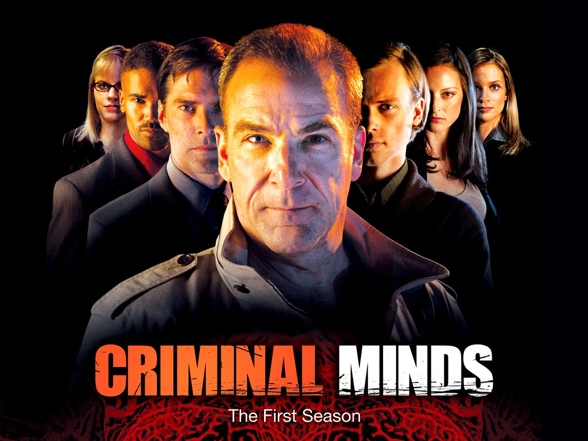

5: Law & Order: Special Victims Unit
Ratings : 🌟 8.0
Genre :CrimeDramaMystery
Seasons : 24
Episodes : 502
Air-Date : September 20, 1999
Watch-Time : 60 min.(Per Ep.)
Synopsis:
Based out of the New York City Police Department's 16th precinct in Manhattan, Law & Order: Special Victims Unit delves into the dark side of the New York underworld as the detectives of a new elite force, the Special Victims Unit (SVU for short), investigate and prosecute various sexually oriented crimes including rape, pedophilia, and domestic violence. They also investigate the abuses of children, the disabled and elderly victims of non-sexual crimes who require specialist handling, all while trying to balance the effects of the investigation on their own lives as they try not to let the dark side of these crimes affect them.
4: The Blacklist
Ratings : 🌟 8.0
Genre : CrimeDramaMystery
Seasons : 8
Episodes : 160
Air-Date : September 23, 2013
Watch-Time : 43 min.(Per Ep.)
Synopsis:
A highly articulate, erudite and intelligent businessman and mastermind, "Red" Reddington, has allegedly been on the "10 Most Wanted List" of various U.S. law enforcement agencies for over 20 years. The legend is that Red is as elusive as he is clever, controlling a labyrinth of creative enterprises, coupled with uncanny ability to gather and finesse information at the drop of a hat. On the first day at FBI for a new female profiler fresh out of Quantico, Red offers to bandy wits with the FBI. Red promises to deliver various criminals and plots previously unknown to any branch of law enforcement... and all Red requests in return is to choose his muse.
3: Criminal Minds
Ratings : 🌟 8.1
Genre : CrimeMysteryDrama
Seasons : 15
Episodes : 323
Air-Date : September 22, 2005
Watch-Time : 42 min.(Per Ep.)
Synopsis:
Based in Quantico, Virginia, the Behavioral Analysis Unit (B.A.U.) is a subsection of the F.B.I. Called in by local Police departments to assist in solving crimes of a serial and/or extremely violent nature where the perpetrator is unknown (referred to by the Unit as the unknown subject or "unsub" for short), the B.A.U. uses the controversial scientific art of profiling to track and apprehend the unsub. Profiling entails coming up with basic characteristics of the unsub and the victims (referred to as the victimology), using evidence from the case and matching that information to historic precedents and psychological analyses as a means to solve the case. Because of the nature of the work conducted by the B.A.U. - the work being time consuming and psychologically demanding - its members are fiercely loyal to the Unit and to its other members. Also because of the work's overall demanding nature, not many members of the B.A.U. have been able to maintain a happy or stable family life.
2: The Expanse

Ratings : 🌟 8.5
Genre : DramaMysterySci-Fi
Seasons : 6
Episodes : 57
Air-Date : December 14, 2015
Watch-Time : 60 min.(Per Ep.)
Synopsis:
Two hundred years in the future, in a fully colonized solar system, police detective Josephus Miller (Thomas Jane), who was born in the asteroid belt, is given the assignment to find a missing young woman; Julie Mao (Florence Faivre). Meanwhile, James Holden (Steven Strait), the first officer of an ice freighter, is witness to an unprovoked attack upon the ship, by craft believed to be from Mars (MCRN Federation). As news of the attack spreads throughout the system, the incident's flow-on threatens to destabilize already tenuous relations between Earth, Mars and The Belt. Far away from the struggles in deep space, on Earth, Chrisjen Avasarala (Shohreh Aghdashloo), a powerful United Nations executive and diplomat, works to prevent war between Earth and Mars by any means. Soon, the 3 find out the missing woman and the ice freighter's fate are part of a vast covert conspiracy which threatens all humanity.
1: Dexter
Ratings : 🌟 8.6
Genre : CrimeDramaMystery
Seasons : 9
Episodes : 106
Air-Date : October 1, 2006
Watch-Time : 53 min.(Per Ep.)
Synopsis:
Orphaned at age three, when his mother was brutally murdered with a chainsaw by drug dealers, Dexter (Michael C. Hall) was adopted by Miami police officer Harry Morgan (James Remar). Recognizing the boy's trauma and the subsequent development of his sociopathic tendencies, Harry has manipulated Dexter to channel his gruesome bloodlust into vigilantism, killing only heinous criminals who slip through the criminal justice system. To facilitate covering his prolific trail of homicides, Dexter gains employment as a forensic analyst, specializing in blood spatter pattern analysis, for the Miami Metro Police Department. Dexter is extremely cautious and circumspect; he wears gloves and uses plastic-wrapped "kill rooms", segments the corpses, and disposes of them in the Atlantic Ocean's Gulf Stream to reduce his chances of detection. Dexter struggles to juggle his double life. Although his homicidal tendencies are deeply unflinching, and he originally claims detachment (via narration), throughout the series he strives to feel and in some cases does feel, normal emotions and maintain his appearance as a socially responsible human being.